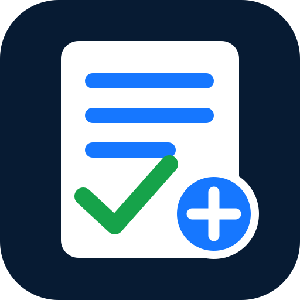

AZNY AVALIAÇÕES
Acesso individual por link
Entre através do link do seu professor
Por segurança, as avaliações não são apresentadas numa lista pública. Cada aluno deve abrir o link específico que o professor partilhou para a prova.
Como entrar:
1. Abra a mensagem recebida do professor.
2. Toque no link da avaliação.
3. Introduza o seu nome e siga as instruções.
4. Os resultados serão associados à sua tentativa individual e só ficarão disponíveis conforme as regras definidas pelo professor.
1. Abra a mensagem recebida do professor.
2. Toque no link da avaliação.
3. Introduza o seu nome e siga as instruções.
4. Os resultados serão associados à sua tentativa individual e só ficarão disponíveis conforme as regras definidas pelo professor.
Se perdeu o link ou não consegue abrir a prova, peça ao professor que o envie novamente.
Voltar à entrada do AZNYAZNY · Avaliações privadas, resultados individuais